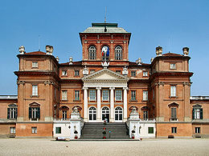

Il Castello Reale di Racconigi è situato a Racconigi,
in provincia di Cuneo ma poco distante da Torino.
Nel corso della sua quasi millenaria storia ha visto numerosi rimaneggiamenti e
divenne di proprietà dei Savoia a partire dalla seconda metà del XIV secolo.
In seguito fu residenza ufficiale del ramo dei Savoia-Carignano
e successivamente fu eletto sede delle "reali villeggiature"
della famiglia reale dei re di Sardegna (e poi d'Italia) nei mesi estivi e autunnali.

Veduta del Castello di Racconigi
Storia
Sono note le seguenti notizie sulla storia del castello:
La fortificazione presente a Racconigi risale al XI secolo,
epoca in cui il territorio era parte della Marca di Torino
e dove Bernardino di Susa edificò o riadattò un'antica casaforte,
sui resti di un precedente monastero.
Nel 1091, alla morte della marchesa Adelaide di Susa,
i territori furono occupati dal nipote Bonifacio del Vasto
e il feudo di Racconigi entrò quindi a far parte dei possedimenti dei marchesi di Saluzzo.
La trasformazione neoclassica (XVIII secolo)
A partire dal 1757 Ludovico Luigi Vittorio di Carignano
commissionò all'architecco Giovanni Battista Barra un notevole rimaneggiamento
secondo il gusto neoclassico tipico dell'epoca,
a cui si deve il rifacimento della facciata meridionale con l'aggiunta del pròtiro tetrastilo
con colonne corinzie sormontate dal frontone triangolare dentellato di ispirazione palladiana.
Gli interventi interni, invece, interessano il Salone d'Ercole,
l'attigua sala di Diana e l'allestimento delle stanze dell'Appartamento Cinese,
decorate con preziose carte da parati in carta di riso.